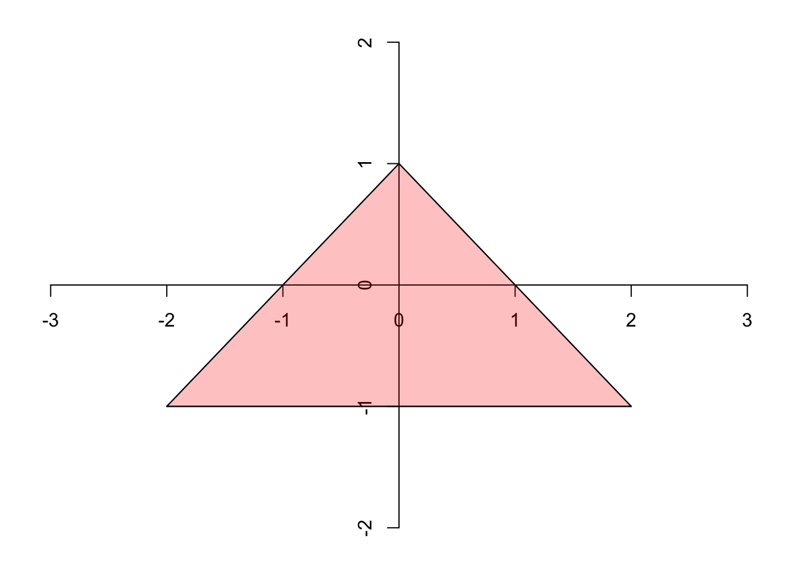

Problem Set 2
Due Monday October 6 at 11:30 AM
Problem 1
Consider the mean-zero AR(2):
\[ y_t=\beta_1y_{t-1}+\beta_2y_{t-2}+\varepsilon_t,\quad\varepsilon_t\overset{\text{iid}}{\sim}\text{N}(0,\,\sigma^2). \]
We can rewrite this in state-space form:
\[ \begin{aligned} y_t&=\begin{bmatrix}1&0\end{bmatrix}\begin{bmatrix}y_t\\y_{t-1}\end{bmatrix} \\ \begin{bmatrix}y_t\\y_{t-1}\end{bmatrix} &= \begin{bmatrix}\beta_1&\beta_2\\1&0\end{bmatrix} \begin{bmatrix}y_{t-1}\\y_{t-2}\end{bmatrix} + \begin{bmatrix}\varepsilon_t\\0\end{bmatrix} . \end{aligned} \]
In order for the process to be stationary, the eigenvalues of the companion matrix must all lie inside the unit circle. This happens if and only if the pair \((\beta_1,\,\beta_2)\) lies in this region:
Prove it.
Problem 2
Consider again the mean-zero AR(2):
\[ y_t=\beta_1y_{t-1}+\beta_2y_{t-2}+\varepsilon_t,\quad\varepsilon_t\overset{\text{iid}}{\sim}\text{N}(0,\,\sigma^2). \]
Assuming the process is stationary, derive concrete formulas for the Yule-Walker estimators of \(\beta_1\), \(\beta_2\), and \(\sigma^2\). To keep the formulas clean, you may find it helpful to introduce notation for the autocorrelation function of a stationary process:
\[ \rho(h)=\frac{\gamma(h)}{\gamma(0)}=\frac{\text{cov}(y_{t+h},\,y_t)}{\text{var}(y_t)}=\text{cor}(y_{t+h},\,y_t). \]
Problem 3
Last time, you derived a recursive updating rule for conjugate Bayesian linear regression. The recursion for the posterior mean of the regression coefficients is
\[ \newcommand{\tr}{{\scriptscriptstyle\mathsf{T}}} \begin{aligned} \mathbf{k}_t&=\frac{\mathbf{H}_{t-1}^{-1}\mathbf{x}_t}{1+\mathbf{x}_t^\tr\mathbf{H}_{t-1}^{-1}\mathbf{x}_t} \\ \mathbf{m}_t &= \mathbf{m}_{t-1} + \mathbf{k}_t(y_t-\mathbf{x}_t^\tr\mathbf{m}_{t-1}) . \end{aligned} \]
That vector \(\mathbf{k}_t\) is sometimes called the Kalman gain. You probably derived this using purely linear algebraic ideas like the Sherman-Morrison formula, but in fact the form of this recursion has important probabilistic meaning as well.
Imagine you are taking a conjugate Bayesian approach to fitting a Gaussian AR(p). After observing the first \(t-1\) observations, here is where things stand:
\[ \begin{aligned} \sigma^2\,|\, y_{1:t-1} &\sim \text{IG}(a_{t-1},\, b_{t-1}) \\ \boldsymbol{\beta}\,|\, \sigma^2,\, y_{1:t-1} &\sim \text{N}_{p+1}(\mathbf{m}_{t-1},\,\sigma^2\mathbf{H}^{-1}_{t-1})\\ y_t\,|\,\boldsymbol{\beta},\,\sigma^2,\, y_{1:t-1} &\sim\text{N}(\mathbf{x}_t^{\scriptscriptstyle\mathsf{T}}\boldsymbol{\beta},\,\sigma^2) && \mathbf{x}_t=\begin{bmatrix}1&y_{t-1}&\cdots &y_{t-p}\end{bmatrix}^{\scriptscriptstyle\mathsf{T}}. \end{aligned} \]
- Using results from Problem Set 0, show that the joint distribution of \(\boldsymbol{\beta}\) and \(y_t\) is multivariate normal, and state the moments:
\[ \begin{bmatrix} \boldsymbol{\beta}\\ y_{t} \end{bmatrix} \,|\,\sigma^2,\,y_{1:t-1} \sim \text{N}_{p+2} \left(?,\,?\right) \]
Using part a and standard results for the conditional distributions of multivariate normals, what is the conditional posterior \(p(\boldsymbol{\beta}\,|\,\sigma^2,\,y_{1:t})\)?
Using part b, what is the probabilistic interpretation of the Kalman gain \(\mathbf{k}_t\)?
Problem 4
Recall the mean-zero MA(q):
\[ y_t = \sum_{i=1}^q\theta_i\varepsilon_{t-i} + \varepsilon_t, \quad \varepsilon_t \overset{\text{iid}}{\sim} \text{N}(0,\, \sigma^2) . \]
It is useful to write this in the form of a linear state-space system:
\[ \begin{aligned} y_t &= \mathbf{F}\mathbf{s}_t + \mathbf{Q}\boldsymbol{\varepsilon}_t \\ \mathbf{s}_t &=\mathbf{G} \mathbf{s}_{t-1} + \mathbf{R}\boldsymbol{\eta}_t \end{aligned} \]
For better or worse, there are many equivalent ways to do this depending on what you think of as the “state,” and they all have their uses:
- \(\mathbf{s}_t=\begin{bmatrix}\varepsilon_t & \varepsilon_{t-1}&\cdots & \varepsilon_{t-q}\end{bmatrix}^{\scriptscriptstyle\mathsf{T}}\in\mathbb{R}^{q+1}\);
- \(\mathbf{s}_t=\begin{bmatrix}\sum\limits_{i=0}^q\theta_i\varepsilon_{t-i} & \sum\limits_{i=1}^q\theta_i\varepsilon_{t-i+1}&\cdots&\theta_q\varepsilon_t\end{bmatrix}^{\scriptscriptstyle\mathsf{T}}\in\mathbb{R}^{q+1}\);
- \(\mathbf{s}_t=\begin{bmatrix}y_t-\varepsilon_t & y_{t-1}-\varepsilon_{t-1}&\cdots & y_{t-q+1}-\varepsilon_{t-q+1}\end{bmatrix}^{\scriptscriptstyle\mathsf{T}}\in\mathbb{R}^q\);
For each version of the state vector, figure out what the system components need to be in order for the state-space system to be equivalent to the MA(q). Some of the objects in the system might be unnecessary and you can set them to zero.
Problem 5
The ARMAacf function in base R computes the autocorrelation function \(\rho(h)=\gamma(h)/\gamma(0)\) for the ARMA(p, q) model. Here I’ve wrapped it in a helper that creates a plot:
# plot the autocorrelation function of an ARMA
plot_arma_acf <- function(ar = numeric(), ma = numeric(), lag.max = 10){
y_vals <- ARMAacf(ar = ar, ma = ma, lag.max = lag.max)
plot(0:lag.max, y_vals, pch = 19, ylim = c(-1, 1),
xlab = "h", ylab = expression(rho~"(h)"))
segments(0:lag.max, 0, 0:lag.max, y_vals)
abline(h = 0, col = "lightgrey")
}So there you go. John Zito did something nice for once. But unfortunately, his evil twin Zohn Jito is back making ridiculous demands. He visits your office in an unhinged frenzy. Much like Klytaemnestra in Strauss’s opera Elektra, his sleep has been troubled (“Ich habe keine guten Nächte”). He has been haunted by feverish dreams of autocorrelation functions, but he knows not from whence they came. Dripping with sweat, he pants:
- “The autocorrelations start high, but then shrink smoothly and monotonically toward zero, without changing sign. It feels like each step of the series only remembers the last one, nothing more complicated.”
- “The correlations seem to alternate signs: positive, then negative, then positive again. They get smaller each time, kind of like a ringing bell that fades away.”
- “The correlations are definitely there at lag 1, a little bit at lag 2, but after that it looks like nothing. Totally flat.”
- “At lag 1 the correlation is negative, but then it’s pretty much gone. Looks like it bounces once and stops.”
- “The autocorrelations stick around forever. They go down, but it’s painfully slow, like the series doesn’t want to forget the past. It looks borderline nonstationary.”
- “There’s a big spike at lag 1, smaller at lag 2, then it tails off smoothly. It’s not a clean cut-off, but it doesn’t oscillate either.”
- “Lag 1 correlation is very strong, lag 2 is still positive but smaller, and then they slowly decay. No sign changes. The series is persistent, but it looks like the short-term correlation is extra strong compared to the long-term tail.”
- “At lag 1 it’s negative, lag 2 bounces back positive, then it decays but stays positive after that.”
- “It’s not a smooth oscillation like a sine wave, but the correlations jump positive, negative, positive for a few lags before dying off.”
- “There’s one big spike at lag 1, maybe a tiny one at lag 2, and then nothing.”
- “First correlation positive, second negative, third positive but small, then basically gone.”
- “The decay is slower than I’d expect for an MA, but the lag-1 correlation isn’t as huge as in an AR(1). It’s like a compromise between short-term and long-term memory.”
- “The first few correlations are really high and fluctuate a little in sign, then they slowly die away like a bell fading in a canyon. It’s more complicated than the simple sine-wave oscillation.”
- “Correlations die very quickly after lag 3, but the first three lags don’t decrease monotonically—they bounce around a bit.”
- “The series looks nearly like white noise. Most of the correlations are tiny, but if you squint you can see a barely-there persistence beyond lag 5 or 6.”
- “Some of the lags alternate in sign, others don’t. It’s not a simple sine wave, more like a complicated dance that fades gradually.”
- “Lag 1 correlation is negative and quite strong, then lag 2 is barely positive, then the series remembers the past moderately for several lags.”
Help bring this poor man some relief! Play around with different values of \(p\), \(q\), and the model parameters until you get an autocorrelation function that matches each description.
Just do ten
Respond to ten of the statements for full credit, but play around with all of them to prepare for the midterm.
Problem 6
The arima.sim function in base R does exactly what it says it does. Feel free to read the documentation. Furthermore, below the fold are some helper functions that implement basic operations for Bayesian linear regression with conjugate priors:
Free stuff!
blr_nig_update <- function(y_t, x_t, a, b, m, invH) {
# Given old prior (a, b, m, invH) and new data point (y, x), compute posterior
# x_t: column vector (p x 1), m: column vector (p x 1), invH: (p x p)
e <- as.numeric(y_t - t(x_t) %*% m)
r2 <- as.numeric(1 + t(x_t) %*% invH %*% x_t)
k <- invH %*% x_t / r2
# update mean
m_new <- m + k * e
# update covariance
invH_new <- invH - k %*% t(x_t) %*% invH
# update shape and scale
a_new <- a + 0.5
b_new <- b + 0.5 * (e^2 / r2)
return(list(a = a_new, b = b_new, m = m_new, invH = invH_new))
}
blr_1step_predictive <- function(x, a, b, m, invH){
list(df = 2*a,
ybar = c(t(x) %*% m),
s2 = (b/a) * c(1 + t(x) %*% invH %*% x))
}
blr_marginal_likelihood <- function(y, X, mu0, Lambda0, a0, b0,
mu_n, Lambda_n, a_n, b_n) {
n <- length(y)
k <- ncol(X)
# determinants via Cholesky for stability
det_ratio <- determinant(Lambda0, logarithm = TRUE)$modulus -
determinant(Lambda_n, logarithm = TRUE)$modulus
log_ml <- lgamma(a_n) - lgamma(a0) +
a0 * log(b0) - a_n * log(b_n) +
0.5 * det_ratio -
(n / 2) * log(2 * pi)
ml <- exp(log_ml)
return(list(log_marginal_lik = as.numeric(log_ml),
marginal_lik = as.numeric(ml)))
}Using these raw materials, write a simulation study that generates a synthetic time series from a pure MA(1) with \(\theta_1=0.99\). Then, mistakenly fit Bayesian AR(p) to the simulated data using these initial priors:
\[ \begin{aligned} p&\sim\text{Unif}(\{1,\,2,\,3\})\\ \sigma^2&\sim\text{IG}(1,\,1)\\ \boldsymbol{\beta}\,|\,\sigma^2,\,p&\sim\text{N}_{p+1}\left(\mathbf{0},\,\sigma^2\mathbf{I}_{p+1}\right). \end{aligned} \]
Starting from these priors, write a for loop that processes the data one observation at a time for each model. Along the way, keep track of the one-step-ahead posterior predictive distributions (non-standard Student’s \(t\)), the posterior model probabilities, and the “best” model (the one with highest probability).
At the end of the simulation, construct the histogram of PITs for each of three forecasting distributions:
| “best” plug-in | \(\text{N}(\mathbf{x}_t^{\scriptscriptstyle\mathsf{T}}\mathbf{m}_{t-1}, b_{t-1} / a_{t-1})\) |
| “best” posterior predictive | \(p(y_t\,|\,y_{1:t-1},\,\hat{p})\) |
| model-averaged | \(\sum_{p=1}^3\text{Pr}(p\,|\,y_{1:t-1})\times p(y_t\,|\,y_{1:t-1},\,p)\) |
Comment on the calibration of each, and don’t forget that the model we are fitting is fundamentally misspecified.
Submission
You are free to compose your solutions for this problem set however you wish (scan or photograph written work, handwriting capture on a tablet device, LaTeX, Quarto, whatever) as long as the final product is a single PDF file. You must upload this to Gradescope and mark the pages associated with each problem.
Do not forget to include the following:
- For each problem, please acknowledge your collaborators;
- If a problem required you to code something, please include both the code and the output.